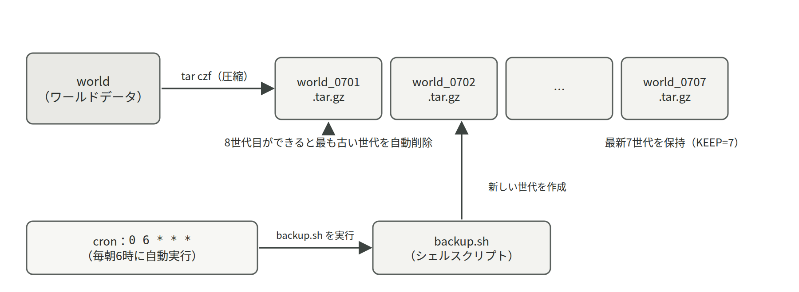

- ログをどこで読み、どの3点に注目するか。logrotateが何をしているか
- 時刻同期（NTP）がログと認証の前提になっていること
- cronの5フィールドと、「手では動くのにcronだと動かない」の原因
- バックアップ設計の4つの観点と3-2-1ルール、監視の3階層
8.1ログ管理
ログは「サーバに起きたことの記録」であり、障害対応とセキュリティ調査の最重要資料である。Linuxのログは大きく、journald（systemd）が管理するサービスのログと、/var/log 以下のファイルに書かれるログ、アプリケーション自身が書くログに分かれる。サービスのログの読み出し方（journalctl）は第6章 6.2で扱った。
ログを読むときは、次の3点に注目する。
- 時刻
- 深刻度（ERROR/WARN/INFO）
- メッセージ本文
「エラーの1行目だけ読んで検索する」のではなく、その前後の数行（何をしようとして失敗したのか）まで読むのが調査のコツである。第3回 3-6のログ解析演習は、この読み方を身につけるためのものである。
ログは放置すると際限なく増えてディスクを圧迫する。そこでlogrotateという仕組みが、一定期間・一定サイズごとにログを切り替え、古いものを圧縮・削除している。journaldも保存容量に上限を設けて古いログを自動削除しており（journalctl --disk-usage で使用量を確認できる）、発想は同じである。「ディスク使用率が徐々に増えて100%になる」障害の犯人は、たいてい肥大化したログかバックアップである。
- logrotatelog rotation
- ログファイルを一定期間・一定サイズごとに新しいものへ切り替え、古い世代を圧縮・削除する仕組み。これがないとログは増え続け、いつかディスクを埋める。
実際には、少しずつ増えるログと、消し忘れたバックアップが原因であることが多い。df -h で使用率を、du -sh * でどのディレクトリが重いかを定期的に見る習慣をつけたい。バックアップスクリプトに世代数の上限を設けるのも同じ理由である（第4回 4-2）。
8.2時刻同期（NTP）
複数のコンピュータが連携するシステムでは、時計のずれは致命的である。ログの時刻が信用できなければ障害の再構成ができず、認証や証明書の検証も時刻に依存している。NTP（Network Time Protocol）は、ネットワーク経由で正確な時刻源と同期する仕組みで、原子時計を頂点とした階層構造（stratum）で世界中に時刻を配っている。
Raspberry Piは電源を切ると時計を保持できない（時計用の電池を持たない）ため、起動時のNTP同期が特に重要である。timedatectl で「System clock synchronized: yes」を確認する習慣をつけたい（第4回 4-3 時刻管理（NTP））。
- NTPNetwork Time Protocol
- ネットワーク越しに正確な時刻をもらって時計を合わせる仕組み。ログの時刻も、cronが動く時刻も、これが合っていることが前提になっている。
時刻がずれていると、複数の記録を突き合わせて「何が先に起きたか」を再構成できなくなる。バックアップのファイル名に時刻を入れている場合は、世代の順序まで狂う。原因調査の土台が崩れるので、まず timedatectl を確認する。
8.3cronによる自動化
cronは指定時刻にコマンドを自動実行する仕組みで、バックアップ、ログ集計、定期レポートなど運用作業の自動化の基本である。スケジュールは「分 時 日 月 曜日」の5フィールドで指定する（第4回 4-3）。
注意すべきは、cronがあなたのシェルとは別の最小限の環境で動くことである。PATHがほぼ設定されていないため、コマンドもファイルも絶対パスで書くのが原則である。「手で実行すると動くのにcronだと動かない」の原因はほぼこれである。
また、cronの実行結果を確認する手段（ログへの追記や 2>&1 でのエラー記録）を仕込んでおくことも重要である。動いていないことに気づけない自動化は、自動化していないより危険である。
- croncrontab
- 指定した日時にコマンドを自動実行する仕組み。設定は
crontab -eで編集し、「分 時 日 月 曜日 コマンド」の形で1行ずつ書く。
cronはPATHも作業ディレクトリもほとんど設定されていない環境でコマンドを動かす。スクリプトもその中で呼ぶコマンドも絶対パスで書き、出力をログファイルに追記しておけば、次からは原因がログに残る。
登録したのだから、あとは動いているはず自動化は「失敗しても誰も気づかない」ことが最大の弱点である。出力の記録先を決め、しばらくは翌日にログとバックアップの実体（ファイルが増えているか）を自分の目で確認すること。
8.4バックアップ設計

バックアップ設計で考えるべきことは「何を・どこに・どれだけの頻度で・何世代」である。有名な指針が3-2-1ルールで、「3つのコピーを、2種類の媒体に、うち1つは別の場所に」置くことを推奨する。実習の構成（本体＋同一SD上の7世代）はこのうち「3つのコピー」を部分的に満たすに過ぎず、SDカード自体が壊れれば全滅する。scpで別のマシンに転送する発展課題は、「1つは別の場所に」への第一歩である。
- 3-2-1ルール3-2-1 rule
- バックアップの指針。3つのコピーを、2種類の媒体に持ち、うち1つは別の場所に置く。同じSDカードの中に何世代置いても、カードが壊れれば同時に失われる。
- 世代管理generation / rotation
- バックアップを1つで上書きせず、日付ごとに複数残し、古いものから消していく運用。「壊れたことに数日後に気づいた」場合でも、壊れる前の状態に戻せる。
もう1つの本質は「バックアップはリストアできて初めて意味がある」ことである。取得は成功していても、いざ戻すと壊れている・手順がわからない・時間がかかりすぎる、という事故は実務で後を絶たない。
定期的なリストア訓練（実習第4回 4-4で行ったこと）は、プロの現場でも推奨される習慣である。
8.5監視の考え方
監視には3つの階層がある。
- 死活監視：サービスが生きているか（
systemctl status、ping）。 - リソース監視：CPU・メモリ・ディスク・温度などの数値が正常範囲か（
top、df、vcgencmd）。 - ログ監視：エラーや異常なアクセスが出ていないか（
journalctl、grep）。
実務ではこれらを自動化し、しきい値を超えたら通知する仕組み（Prometheus、Zabbix、Grafanaなど）を組む。実習第5回 5-4のWeb稼働状況ページは、この監視自動化のごく素朴な原型である。
監視設計のコツは「平常時の値を知っておく」ことである。平常時のload averageや温度を記録した（第3回 3-5）のは、異常を「いつもと違う」として検出するための基準線づくりだった。数値の読み方そのものは第6章 6.3にまとめてある。
- 死活監視alive monitoring
- サービスが動いているかどうかだけを繰り返し確かめる、最も基本的な監視。
systemctl statusやpingの結果を定期的に記録するだけでも成立する。
8.6ログの置き場所と読み方
8.1節ではログの重要性を述べたが、実際に障害対応をするには「どこを見るか」を知っていなければならない。Linuxのログの窓口は大きく2つ、journald（journalctl）と /var/log 以下のテキストファイルである。どちらを見るべきかは、対象がsystemdのサービスかどうかで決まる。
/var/log の主なファイル
まず ls /var/log で自分の環境に何があるかを確かめる習慣をつけたい。Debian 12 以降のシステムは、伝統的なテキストログを書くrsyslogが入っている構成と、journaldだけで完結している構成の両方があり、後者では /var/log/syslog が存在しない。手元に無いファイルの話をいくら調べても時間の無駄なので、最初に一覧を見ることである。
ls -lh /var/log # 何があるか、どれが大きいかを一目で
sudo tail -n 30 /var/log/auth.log # 認証の記録（無い環境もある）
sudo tail -f /var/log/syslog # 流れ続けるログを追う（rsyslogがある環境のみ。無ければ journalctl -f。Ctrl+Cで終了）
less /var/log/apt/history.log # いつ何をaptで入れたかの履歴| 場所 | 内容 | 読む場面 |
|---|---|---|
/var/log/syslog | システム全般のメッセージ（rsyslogがある環境のみ） | 全体に何が起きたかを時系列で追う |
/var/log/auth.log | ログイン、sudo、SSHの認証記録（rsyslogがある環境のみ） | 不審なログイン試行の調査 |
/var/log/kern.log | カーネルからのメッセージ（rsyslogがある環境のみ） | ハードウェアやSDカードの異常 |
/var/log/apt/history.log | aptの操作履歴 | 「いつから壊れたか」を更新履歴から探す |
/var/log/ufw.log | ufwが遮断した通信（ログ有効時。rsyslogがある環境のみ） | 通信が届かない原因の確認 |
/var/log/journal/ | journaldのログ本体（バイナリ、直接は読まない） | journalctl 経由で読む |
テキストのログは tail、less、grep で読む。特に tail -f は「これから起きること」を眺めながら操作を再現するのに向いており、障害の再現手順が分かっているときの定番である。
journalctl との使い分け
systemdが起動したサービス（Luanti、ssh、cron、Dockerなど）のログは、標準出力ごとjournaldが預かっている。したがってサービスの調査は journalctl -u サービス名 が出発点であり、/var/log を探し回る必要はない。オプションの詳細は第6章 6.7にまとめたとおりだが、運用でよく使う組み合わせを再掲する。
journalctl -u luanti --since today # 今日の分だけ
journalctl -u luanti --since "1 hour ago" # 直近1時間
journalctl -p err -b # 今回の起動以降のエラーだけを全サービス横断で
journalctl _COMM=sudo --since today # sudoが実行された記録
journalctl -u luanti -o short-iso # 時刻をISO形式で（他の記録と突き合わせやすい）
journalctl --disk-usage # ログがディスクをどれだけ使っているか1つ注意がある。journaldの保存先が /var/log/journal に作られていない環境では、ログはメモリ上の一時領域に置かれ、再起動すると消える。「昨日のエラーを見ようとしたら何も残っていない」のはこれが原因である。ls /var/log/journal でディレクトリがあれば永続保存、無ければ再起動で消える一時保存である。永続化したい場合は /etc/systemd/journald.conf の Storage=persistent を有効にして sudo systemctl restart systemd-journald を実行する。なお /etc/systemd/journald.conf.d/ 以下に別の Storage= 指定があると、本体の設定よりそちらが優先される。ただし書き込みが増えるので、SDカードの寿命とのかね合いになる。
※ 第3回 3-6 演習：ログ解析では journalctl -u luanti と grep を組み合わせて入退室を数えた。--since today を足すと、その日の演習中の記録だけに絞れる。
logrotate の設定ファイルを読む
logrotateは /etc/logrotate.conf の全体設定と、/etc/logrotate.d/ にあるソフトごとの設定で動く。新しくソフトを入れるとここにファイルが1つ増える、と考えてよい。自分で書く機会は少ないが、読めるようになっておくと「このログは何日分残るのか」がすぐ分かる。
cat /etc/logrotate.conf # 全体の既定
ls /etc/logrotate.d/ # ソフトごとの設定
sudo logrotate -d /etc/logrotate.conf # 予行演習（-d は何も変更しない）| 設定項目 | 意味 | 例 |
|---|---|---|
daily / weekly | 切り替える周期 | weekly |
rotate 数 | 何世代残すか。これを超えた古い分は削除される | rotate 4 |
size 大きさ | 指定サイズを超えたら周期を待たずに切り替える | size 10M |
compress | 切り替えた古いログをgzipで圧縮する | compress |
missingok | 対象ファイルが無くてもエラーにしない | missingok |
notifempty | 中身が空なら切り替えない | notifempty |
create 権限 所有者 グループ | 切り替え後に新しい空ファイルをこの権限で作る | create 640 root adm |
weekly と rotate 4 が書いてあれば、そのログは約4週間分残る。障害調査で「1か月以上前の記録」を求められたときに、そもそも残っていないと分かるのはこの読み方ができるからである。
ログに残してはいけない情報
ログは長く残り、しばしば複数人が読み、バックアップにも入る。したがって、次のものはログに書いてはいけない。自作のスクリプトやアプリを作るときに特に注意が要る。
- パスワード、APIキー、トークン、秘密鍵の内容。
- 個人情報（氏名、学籍番号、メールアドレス、位置情報など）を必要以上に。
- クレジットカード番号などの決済情報。
「デバッグのために一時的に出す」つもりの出力が、そのまま本番に残ってしまう事故は実務でも多い。ログに出す前に「これが第三者に読まれても困らないか」を一度考えるのが唯一の確実な予防策である。技術記事を書くとき（第6回）にログを貼る場合も同じで、IPアドレスやホスト名、ユーザ名は伏せるか架空のものに置き換える。
量が多すぎるログは読まれず、ディスクを食い、肝心の1行を埋もれさせる。「異常時に原因が特定できる最小限」を目指すのが設計である。逆に、成功したときに何も残さない設計も困る。始まりと終わり、そして失敗の理由の3つが残っていれば、たいていの調査はできる。
8.7時刻を合わせる（timedatectl）
8.2節で述べたとおり、時刻はログと認証の前提である。Raspberry Piは電源を切ると時計を保持できないため、起動のたびにネットワーク越しに時刻を取り直している。その状態を確認・設定するコマンドが timedatectl である。
timedatectl # 現在時刻、タイムゾーン、同期状態をまとめて表示
timedatectl timesync-status # どのNTPサーバとどれだけずれているか
sudo timedatectl set-timezone Asia/Tokyo # タイムゾーンを日本時間に
sudo timedatectl set-ntp true # 自動同期を有効にする
date # 今の時刻を1行で確認| サブコマンド | 意味 | 例 |
|---|---|---|
| （なし） | 時刻、タイムゾーン、NTP同期の状態を表示する | timedatectl |
timesync-status | 同期先のサーバ、ずれ幅、次の同期までの間隔を表示する | timedatectl timesync-status |
set-timezone 地域 | タイムゾーンを設定する | sudo timedatectl set-timezone Asia/Tokyo |
list-timezones | 指定できるタイムゾーンの一覧を表示する | timedatectl list-timezones | grep Tokyo |
set-ntp true/false | ネットワーク時刻同期の有効、無効を切り替える | sudo timedatectl set-ntp true |
timedatectl
Local time: Mon 2026-10-12 13:21:44 JST
Universal time: Mon 2026-10-12 04:21:44 UTC
Time zone: Asia/Tokyo (JST, +0900)
System clock synchronized: yes
NTP service: active見るべきは下の3行である。Time zone が Asia/Tokyo になっていないと、ログの時刻が9時間ずれて記録され、後から突き合わせるときに混乱する。System clock synchronized: yes は「時刻合わせに成功している」印で、no のままならネットワークに出られていないか、同期サービスが動いていない。NTP service: active はその同期サービス（多くの環境では systemd-timesyncd）が稼働中であることを示す。なお環境によってはchronyなど別のNTPクライアントが使われており、その場合は timesync-status が使えないかわりに chronyc tracking で同じことを確認する。
時刻が狂うと何が起きるか。第1に、ログの時系列が信用できなくなり障害の再構成ができない。第2に、日付を含むファイル名でバックアップを取っていると、世代の順序が狂う（第4回 4-2）。第3に、cronが意図しない時刻に動くか、まったく動かない。第4に、TLSの証明書は有効期間を時刻で判定するため、大きくずれると正常な証明書まで「期限切れ」と判定されて通信できなくなる。原因不明の不具合に出会ったら、早い段階で timedatectl を確認するのは費用対効果の高い習慣である。
8.8cron コマンドリファレンス
8.3節で触れたcronの書式を、実務で必要な全項目に広げて整理する。cronは「決まった時刻に決まったコマンドを実行する」だけの素朴な仕組みだが、書式の読み書きができると自動化の幅が一気に広がる。
5つのフィールドと書き方
1行は「分 時 日 月 曜日 コマンド」の6つの部分からなる。時刻のフィールドは左から順に細かい単位ではなく、分、時、日、月、曜日の順である点に注意したい。
| 位置 | 項目 | 範囲 | 備考 |
|---|---|---|---|
| 1 | 分 | 0 から 59 | 毎時の何分か |
| 2 | 時 | 0 から 23 | 24時間制 |
| 3 | 日 | 1 から 31 | 日付 |
| 4 | 月 | 1 から 12 | jan などの英字も可 |
| 5 | 曜日 | 0 から 7 | 0 と 7 が日曜、1 が月曜 |
| 6 | コマンド | 自由 | 絶対パスで書く |
各フィールドでは *（毎回）、,（列挙）、-（範囲）、/（間隔）が使える。日と曜日の両方を指定した場合は「どちらかに当てはまれば実行」というやや直感に反する動きをするので、片方は * にしておくのが無難である。
PATH=/usr/local/bin:/usr/bin:/bin
MAILTO=""
0 6 * * * /home/luanti/backup.sh >> /home/luanti/backup.log 2>&1
*/10 * * * * /home/luanti/monitor.sh >> /home/luanti/monitor.log 2>&1
30 8 * * 1-5 /home/luanti/report.sh >> /home/luanti/report.log 2>&1
0 3 1 * * /home/luanti/monthly.sh >> /home/luanti/monthly.log 2>&1
@reboot /home/luanti/startup-check.sh >> /home/luanti/startup.log 2>&1| 書式 | 意味 |
|---|---|
0 6 * * * | 毎日6時00分 |
*/10 * * * * | 10分ごと |
0 */6 * * * | 6時間ごと（0時、6時、12時、18時） |
30 8 * * 1-5 | 平日（月曜から金曜）の8時30分 |
0 3 1 * * | 毎月1日の3時00分 |
0 0,12 * * * | 毎日0時と12時 |
@reboot | 起動のたびに1回 |
crontab コマンドと環境変数
予定表はユーザごとに別々に管理される。編集したいユーザ本人でログインした状態で crontab -e を実行するのが原則で、これを忘れて別のユーザの予定表に書いてしまう失敗が非常に多い。
crontab -l # 現在の設定を表示
crontab -e # 編集（初回はエディタの選択画面が出る）
crontab -l > ~/crontab.bak # 編集前に控えを取っておく
crontab ~/crontab.bak # 控えから復元する
sudo crontab -l -u luanti # 他ユーザの設定を管理者として確認※ crontab -r は確認なしで、そのユーザの予定表をすべて削除する。-e と隣り合っているため押し間違いが起きやすい。消す前に必ず crontab -l > ~/crontab.bak で控えを取ること。控えさえあれば crontab ~/crontab.bak で元に戻せる。
| 項目 | 意味 | 書き方 |
|---|---|---|
PATH | コマンドを探す場所。既定はほぼ空なので明示すると安全 | PATH=/usr/local/bin:/usr/bin:/bin |
MAILTO | 出力の送り先メールアドレス。空にすると送らない | MAILTO="" |
SHELL | 実行に使うシェル。既定は /bin/sh | SHELL=/bin/bash |
>> ファイル | 標準出力をログに追記する | >> /home/luanti/backup.log |
2>&1 | エラー出力も同じログに混ぜる。必ず追記指定の後に書く | >> x.log 2>&1 |
\% | crontabの中では % が改行扱いになるので、date の書式指定などでは \ で打ち消す | /usr/bin/date +\%F |
システム全体の予定表としては、/etc/crontab と /etc/cron.d/ もある。こちらは書式が1列多く、コマンドの前に実行ユーザを書く点が個人のcrontabと異なる。また /etc/cron.daily/ などのディレクトリに実行可能なスクリプトを置くと、1日1回自動で実行される。なお logrotate は、Debian系の現在の版では systemd の timer（systemctl list-timers に logrotate.timer として出る）で1日1回動いている。
systemctl status cron
● cron.service - Regular background program processing daemon
Loaded: loaded (/lib/systemd/system/cron.service; enabled; preset: enabled)
Active: active (running) since Mon 2026-10-12 08:02:11 JST; 5h 19min ago
journalctl -u cron --since today | tail -n 5
Oct 12 13:00:01 mc-24s1234 CRON[3411]: (luanti) CMD (/home/luanti/monitor.sh >> /home/luanti/monitor.log 2>&1)
Oct 12 13:10:01 mc-24s1234 CRON[3502]: (luanti) CMD (/home/luanti/monitor.sh >> /home/luanti/monitor.log 2>&1)まず Active: active (running) でcron自体が動いていることを確かめる。次に journalctl -u cron の行を見る。(luanti) CMD (...) の形で行が残っていれば、cronは指定どおり実行を試みている。それでも結果が出ていないなら、原因はcronではなくスクリプトの側にあり、リダイレクト先のログファイル（この例では monitor.log）を読むべきである。逆にCMDの行自体が無ければ、書式かユーザの取り違えを疑う。
※ 第4回 4-3 cronによる自動化でバックアップを自動化する。動作確認用の */10 のまま放置せず、確認できたら 0 6 * * * に直すところまでが演習である。
systemd timer との比較
同じ定期実行を、systemdのtimerで実現することもできる。近年のDebian系ではこちらに移行しているソフトも多い。cronのほうが手軽だが、timerには「サービスとして管理できる」「電源が落ちていて実行できなかった分を後から実行できる」という明確な利点がある。
| 観点 | cron | systemd timer |
|---|---|---|
| 設定の書き方 | 1行で済む。手軽 | .timer と .service の2ファイルが要る |
| ログ | 自分でリダイレクトを書く必要がある | journaldに自動で残る |
| 実行し損ねた分 | そのまま流れる | Persistent=true で起動後に追いかけ実行できる |
| 状態の確認 | crontab -l で予定を見るだけ | systemctl list-timers で次回と前回が分かる |
| 依存関係 | 書けない | After= などで他のサービスとの順序を指定できる |
[Unit]
Description=Luanti world backup
[Service]
Type=oneshot
User=luanti
Environment=HOME=/home/luanti
ExecStart=/home/luanti/backup.sh[Unit]
Description=Run Luanti world backup daily
[Timer]
OnCalendar=*-*-* 06:00:00
Persistent=true
[Install]
WantedBy=timers.target同じ仕組みの例を、別の名前（luanti-backup、毎日4時30分）で第6章 6.8にも載せている。各行の意味はそちらで説明している。試すときはどちらか一方だけを作ればよい。
sudo systemctl daemon-reload # ユニットを作ったら必ず実行
sudo systemctl enable --now backup.timer # 有効化して今から動かす
systemctl list-timers --all # 次回と前回の実行時刻の一覧
journalctl -u backup.service --since today # 実行結果のログ有効化するのは .timer のほうで、.service は有効化しない（timerに呼び出してもらう側だからである）。OnCalendar の書式はcronとは別物で、*-*-* 06:00:00 は「毎日6時ちょうど」を意味する。
- systemd timer.timer unit
- systemdが持つ定期実行の仕組み。
.timerが時刻を、.serviceが実行内容を受け持つ。ログがjournaldに残り、実行できなかった分を後から追いかけ実行できる点がcronとの違いである。
8.9バックアップ設計を実装に落とす
8.4節では3-2-1ルールと世代管理の考え方を扱った。ここでは、それを実際の手順とコマンドに落とすときの選択肢を整理する。設計で決めるべきことは「何を」「どの方式で」「どこに」「どれだけの頻度で」「何世代」「どう戻すか」の6つである。
フル・差分・増分
取得方式には3つある。どれが正しいということはなく、復元の速さと保存容量のどちらを優先するかの選択である。
| 方式 | 取るもの | 容量 | 復元の手間 |
|---|---|---|---|
| フル | 毎回すべて | 大きい | 最新の1つを戻すだけ。最も簡単 |
| 差分 | 直近のフル以降に変わった分 | 中くらい | フル1つ＋最新の差分1つ |
| 増分 | 直前の取得以降に変わった分 | 小さい | フル1つ＋その後の増分をすべて順に |
実習で作ったのは「毎回フル＋7世代」という最も単純な構成である。ワールドデータが数十メガバイト程度なら、この単純さが最大の利点になる。復元の手順が複雑な設計は、いざというときに使えないことを忘れてはならない。
- 増分バックアップincremental backup
- 前回の取得から変わった分だけを保存する方式。容量は小さく済むが、復元にはフルとその後の増分をすべて順に戻す必要があり、1つでも欠けると復元できない。
rsync によるミラーと世代の整理
tar で固めて世代を残す方式に対し、rsync でそのままの形を別の場所に写す方式もある。ミラーは「開いてすぐ使える」「差分転送で速い」のが利点で、別マシンへの複製（3-2-1ルールの「1つは別の場所に」）との相性がよい。
rsync -avn ~/server/world/ ~/mirror/world/ # まず予行演習（-n）で内容を確認
rsync -av ~/server/world/ ~/mirror/world/ # 実行
ls -lt ~/backup | head # 世代が新しい順に並ぶ
find ~/backup -name 'world_*.tar.gz' -mtime +7 # 8日以上前の世代を「一覧するだけ」
find ~/backup -name 'world_*.tar.gz' -mtime +7 -delete # 確認してから削除※ find ... -delete は確認なしで消す。必ず -delete を付けない形で先に実行し、表示された一覧が消してよいものだけであることを目で確かめてから、同じ条件に -delete を足すこと。-name の条件を書き忘れると、ディレクトリの中身すべてが対象になってしまう。同様に、rsync --delete は送り先の余分なファイルを消すので、必ず -n で予行演習してから実行する。
バックアップは取ったら壊れていないかを確かめる。圧縮ファイルなら gzip -t で伸長できるかを検査でき、sha256sum でコピー前後が同一かを確認できる。取得直後の検査を自動化しておけば、「壊れたバックアップを7世代持っていた」という最悪の事態を防げる。
gzip -t ~/backup/world_20261012_060001.tar.gz # 壊れていれば何か出力される（正常なら無言）
tar tzf ~/backup/world_20261012_060001.tar.gz | head # 中身の先頭を目視
sha256sum ~/backup/world_20261012_060001.tar.gz # 転送前後の同一性の確認に使う暗号化と復元訓練
バックアップを別の場所に置くということは、そのファイルを持つ人は中身をすべて読めるということである。個人情報や認証情報を含むデータを外部に置くなら暗号化する。最も手軽なのは gpg による共通鍵暗号で、合言葉（パスフレーズ）を知っている人だけが復号できる。
gpg -c ~/backup/world_20261012_060001.tar.gz # .gpg が作られる（パスフレーズを2回入力）
gpg -o ~/restore/world.tar.gz -d ~/backup/world_20261012_060001.tar.gz.gpg # 復号言うまでもないが、パスフレーズを忘れると自分でも復元できない。鍵や合言葉の保管場所も含めてバックアップ設計である。暗号化したファイルと同じ場所にパスフレーズを書いたメモを置くのでは意味がない、という点も押さえておきたい。
そして最後に、最も大切な習慣が復元訓練である。訓練では次の4点を確認し、かかった時間を記録する。
- 最新のバックアップから実際にデータを取り出せるか。
- 取り出したデータでサービスが正常に起動するか。
- 手順書を見ながら、作った本人でなくても実行できるか。
- 復元完了までに何分かかるか（これが実質的な復旧目標時間になる）。
※ 第4回 4-4 リストア訓練がまさにこの訓練である。第4回の発展課題で別マシンに転送すれば、3-2-1ルールの「1つは別の場所に」に一歩近づく。
確かめているのは「スクリプトが最後まで走ったこと」だけかもしれない。中身が空のアーカイブを作り続けていても、スクリプトは成功で終わる。ファイルのサイズが妥当か、中身の一覧が取れるかまで確認してはじめて「取れている」と言える。
RAIDやクラウドの同期フォルダがあるので、バックアップは不要であるそれらは機器の故障には強いが、誤って削除した場合や、壊れたデータを書いてしまった場合はその状態がそのまま複製される。過去の時点に戻せることがバックアップの本質であり、同期はバックアップの代わりにならない。
8.10監視の組み立て方
8.5節で監視の3階層を示した。ここでは、その3階層をどう具体化するか、しきい値をどう決めるか、そして実務で使われる道具がどういう位置づけにあるかを整理する。監視は「異常を早く知るための投資」であり、作り込みすぎないことも設計のうちである。
何を、どのしきい値で見るか
監視項目は、異常のときに人が何か行動できるものに絞る。誰も対応しない通知は、やがて全員に無視されるようになり、本当に重要な通知まで埋もれさせる。
| 階層 | 見るもの | 確認コマンド | しきい値の例 |
|---|---|---|---|
| 死活 | サービスが動いているか | systemctl is-active luanti | active 以外なら異常 |
| 死活 | ポートが応答するか | nc -zuv localhost 30000 | 接続不可なら異常 |
| リソース | ディスク使用率 | df -h / | 80%で警告、90%で危険 |
| リソース | メモリの空き | free -h | スワップが増え続けていれば注意 |
| リソース | CPU温度（Raspberry Pi） | vcgencmd measure_temp | 80度前後で性能が落ち始める |
| ログ | エラーの発生 | journalctl -p err -b | 新規のエラー行が出たら確認 |
しきい値は教科書から借りるのではなく、自分のサーバの平常値から決めるのが正しい順序である。第3回 3-5で平常時のload averageや温度を記録したのは、この基準線を作るためだった。「いつも0.3なのに今は4.0」という判断は、平常値を知っている人にしかできない。
- しきい値threshold
- これを超えたら異常とみなす境界の値。平常時の値を先に知らないと決められない。厳しすぎると通知が多すぎて無視され、緩すぎると手遅れになる。
自作の最小限の監視
本格的な監視ツールを入れる前に、cronとシェルスクリプトだけでも実用的な監視は作れる。要点は「判定する」「記録する」「異常時だけ目立たせる」の3つである。次は死活とディスクを見る最小限の例である。
#!/bin/bash
set -u
LOG=/home/luanti/monitor.log
STAMP=$(date '+%Y-%m-%d %H:%M:%S')
if systemctl is-active --quiet luanti; then
echo "$STAMP luanti OK" >> "$LOG"
else
echo "$STAMP luanti DOWN" >> "$LOG"
fi
USE=$(df -P / | awk 'NR==2 {gsub("%","",$5); print $5}')
if [ "$USE" -ge 80 ]; then
echo "$STAMP DISK WARN ${USE}%" >> "$LOG"
else
echo "$STAMP disk ${USE}%" >> "$LOG"
fichmod +x ~/monitor.sh
~/monitor.sh # 手で1回動かす
cat ~/monitor.log # 記録されたか確認
grep -E 'DOWN|WARN' ~/monitor.log # 異常だけを抜き出す通知の手段は環境によって異なる。学内サーバでメールを送るのは難しいことが多いので、実習の範囲では「異常行だけを抜き出して読む」「第5回 5-4の稼働状況ページに出す」までで十分である。実務ではチャットツールへの送信や監視サービスへの通知を組み込むが、考え方は同じで、判定と通知を分けて作ると後から差し替えやすい。
※ 第5回 5-4 Web監視ページの公開は、この「記録する」の出力先をHTMLにしたものにあたる。第9章のシェルスクリプトの文法と合わせて読むと、自分で書き換えられるようになる。
監視ツールの位置づけ
実務で使われる道具は、だいたい次のように役割が分かれている。名前を聞いたときに「どの層の話か」が分かれば十分である。
| 名前 | 役割 | ひとこと |
|---|---|---|
| Prometheus | 数値（メトリクス）を定期収集して保存する | 各サーバから値を取りに行く方式。しきい値での通知も担う |
| Grafana | 集めた数値をグラフとして見せる | 収集はしない。Prometheusなどと組み合わせる |
| Zabbix | 収集、判定、通知、画面までを1つで担う | 企業のサーバ監視で古くから使われる総合型 |
| Uptime Kuma | URLやポートの死活を監視して通知する | 導入が簡単で、個人や小規模の用途に向く |
| Munin | リソースの推移をグラフにする | 設定が少なく、学習用にも扱いやすい |
いずれも導入より運用のほうが難しい。監視項目が増えるほど、誤検知の手入れや通知の整理という仕事が生まれる。まずは自作の数行から始めて、手に負えなくなったら道具に置き換える、という順序が現実的である。
8.11障害対応の型
サーバは必ず壊れる。大切なのは壊れないことではなく、壊れたときに慌てず、同じ失敗を繰り返さないことである。ここでは、経験の浅いうちほど効く「型」を示す。
切り分けの順序
障害対応の第一歩は、原因の候補を絞ることである。自分側、経路、相手側の3つに分けて、近いほうから順に確かめていく。この順序を守るだけで、無駄な調査が大きく減る。
| 場所 | 確かめること | コマンドの例 |
|---|---|---|
| 自分側 | 手元の端末がネットワークに繋がっているか | ip -br a、ping 8.8.8.8 |
| 経路 | 相手のIPアドレスまで届くか、名前が引けるか | ping 相手、getent hosts 相手 |
| 経路 | そのポートが開いているか | nc -zv 相手 22 |
| 相手側 | サービスが動いているか | systemctl status luanti |
| 相手側 | ファイアウォールが遮っていないか | sudo ufw status numbered |
| 相手側 | 直前に何が起きたか | journalctl -u luanti -n 50 |
もう1つの強力な問いが「いつから、何を変えたか」である。動いていたものが動かなくなったなら、その間に必ず何かが変わっている。設定の編集、パッケージの更新（/var/log/apt/history.log）、再起動、ディスクの残量。変更の直後に壊れたなら、まずその変更を戻すのが最短経路であり、原因の究明はサービスを復旧させてからでよい。
- 切り分けisolation
- 障害の原因がどこにあるかを、範囲を狭めながら特定していく作業。自分側、経路、相手側の順に確かめるのが基本で、思いつきで試すより早く確実である。
記録を残しながら直す
対応中は焦るので、後から思い出そうとしても正確には思い出せない。実行したコマンドと、そのときの出力、時刻を、直しながら残すこと。これは実験記録の書き方そのものであり、実習で練習していることがそのまま実務の作法になっている。
記録があると、次の3つが可能になる。第1に、自分の変更を元に戻せる。第2に、他の人に状況を正確に伝えられる。第3に、同じ障害が再発したときに、前回の記録が最良の手順書になる。逆に記録の無い対応は、たとえ直っても「なぜ直ったか分からない」という状態を残し、次に同じことが起きる。
※ 対応中の思いつきで、複数の設定を同時に変えないこと。1つ変えて、確かめて、記録する。まとめて変えると、どれが効いたのか分からなくなるうえ、元に戻すこともできなくなる。sudo cp ファイル ファイル.bak を編集前に打つ習慣が、最後にあなたを助ける。
ポストモーテムと手順書
復旧したら終わりではない。落ち着いてから、起きたことを振り返って短い文書にまとめる。これをポストモーテム（事後検証）と呼ぶ。重要なのは、誰の責任かではなく、何が起きたかと、次はどうすれば防げるかを書くことである。人を責める文化では、事故が隠されるようになり、組織全体が同じ失敗を繰り返す。
- いつ、何が起きたか（時刻と現象）。
- 利用者への影響（誰が、どれだけの時間、何をできなかったか）。
- 直接の原因と、それを生んだ背景。
- どうやって復旧したか（実行した手順）。
- 再発を防ぐために次にすること（担当と期限まで書く）。
そして、繰り返す作業は手順書（ランブック）にする。手順書は「その場にいない人が、それだけを読んで実行できる」ことが条件である。具体的には、前提（どのユーザで、どのマシンで）、手順（コマンドを省略せずに）、成功の判定方法（この出力が出れば成功）、失敗したときの戻し方の4つを書く。第6回で技術記事を書く作業は、この手順書を書く練習でもある。
- ポストモーテムpostmortem
- 障害が収まった後に、何が起きて、どう直して、次にどう防ぐかをまとめる文書。人を責めるのではなく仕組みを直すことを目的とする。
- 手順書runbook
- 定型作業や復旧作業の手順を、その場にいない人でも実行できるように書いた文書。前提、手順、成功の判定方法、失敗時の戻し方の4点が揃っていることが条件である。
再起動は確かに多くの症状を消すが、消えるのは症状だけで、原因は残っている。同じ障害は必ず戻ってくる。再起動する前に journalctl -p err -b と df -h の出力だけでも控えておけば、次に起きたときの手がかりになる。
確かに早いが、それだけでは自分は何も学べず、次も同じ人を待つことになる。7.8の切り分けを自分で一通りやってから、どこまで確かめたかを添えて助けを求めると、助ける側も格段に動きやすい。「何が正常で、何が異常だったか」を伝えられることが、技術者としての第一歩である。